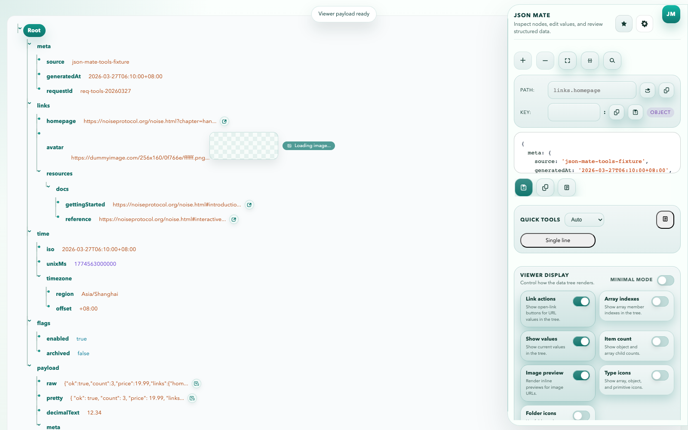

树形查看
打开 JSON URL 后自动接管页面，树形查看数组、对象和原始值，支持选中节点后继续操作。
浏览器 JSON 扩展
打开接口响应后直接进入树形视图。右侧面板可查看路径和值，快捷工具可以处理 URL、Base64、Unicode、HTML 和大小写转换。

安装
当前公开版本通过 GitHub 发布包分发。Chrome 和 Edge 可以手动加载解压后的扩展目录；后续商店上架后，这里会切换到对应入口。
功能
打开 JSON URL 后自动接管页面，树形查看数组、对象和原始值，支持选中节点后继续操作。
右侧面板显示路径、键、值和类型信息。面板宽度可拖动，适合宽屏调试。
URL、Base64、Unicode、HTML、大小写等转换可以直接处理当前值，也能在弹窗里单独使用。
点击扩展图标先看到输入框，再管理最近打开和收藏的 JSON 入口。
使用流程
JSON Mate 的页面结构围绕这几个动作设计。内容保留在浏览器本地；遥测端点只接收匿名使用统计。